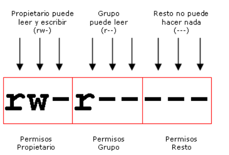

En los Sistemas Unix, la gestión de los permisos que los usuarios y los grupos de usuarios tienen sobre los archivos y las
carpetas, se realiza mediante un sencillo esquema de tres tipos de permisos que son:
- Permiso de lectura
- Permiso de escritura
- Permiso de ejecución
A todos los archivos y directorios del sistema se le asigna tres grupos de permisos: propietario, grupo y otros. En realidad estos permisos se gestionan como grupos de tres bits, indicando si el usuario puede leer, escribir o ejecutar, como se ve en la siguiente imagen:

Para dar los permisos anteriores a un archivo usando chmod escribiríamos lo siguiente: chmod 640 archivo.